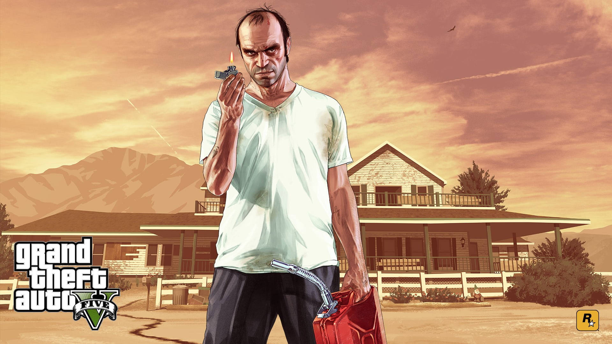

Michael De Santa , es uno de los tres protagonistas de Grand Theft Auto V , junto a Franklin Clinton y Trevor Philips . Es interpretado por Ned Luke . Michael es un ex ladrón de bancos y delincuente profesional que fingió su muerte para retirarse y vivir una vida tranquila con su familia en Los Santos . Sin embargo, su relación enfermiza con ellos le pasa factura, y pronto se ve arrastrado de nuevo a su vida criminal, obligándolo a volver a sus viejas costumbres. La historia de Michael se centra en cómo su aparentemente idílico y tranquilo estilo de vida se ve truncado cuando sus demonios del pasado y sus decisiones moralmente cuestionables vuelven para atormentarlo.
Trevor Philips es uno de los tres protagonistas de Grand Theft Auto V , junto con Michael De Santa y Franklin Clinton , y aparece como personaje principal en Grand Theft Auto Online . Su voz es la de Steven Ogg .Trevor es un criminal de carrera y ex ladrón de bancos con un pasado complicado, que más tarde fundó su propia empresa, Trevor Philips Enterprises , que opera con el tráfico de drogas y el contrabando de armas en el condado de Blaine . Es amigo de Ron Jakowski , Wade Hebert y Chef , que trabajan para su empresa, así como el más antiguo y mejor amigo de Michael, a quien creía muerto durante casi una década después de que fingiera su muerte para retirarse de la vida criminal . Trevor es conocido por tener un comportamiento generalmente imprudente y muy agresivo, pero también es muy leal y respeta profundamente a todos sus allegados. La historia de Trevor se centra en cómo sus acciones tienen consecuencias tanto en él como en sus amigos, y en cómo él llega a un acuerdo con las acciones pasadas de Michael. Más tarde, Trevor también se hace amigo del tercer protagonista, Franklin, convirtiéndose en una especie de figura de mentor para él.

Franklin Clinton es un personaje que aparece como uno de los tres protagonistas de Grand Theft Auto V , junto con Michael De Santa y Trevor Philips , y como personaje principal en Grand Theft Auto Online como parte de la actualización The Contract , apareciendo también como uno de los dos personajes jugables de la serie de misiones Short Trips y los modos Adversario Double Down , junto con Lamar Davis .Franklin nació y vivió toda su vida en Los Santos . De joven se hizo pandillero y se unió a las Familias de Gánsteres Chamberlain junto a su mejor amigo Lamar Davis, cometiendo diversos delitos menores para ganarse la vida. Ellos y sus colegas de CGF de Forum Drive formarían más tarde la organización independiente Forum Gangsters para mantenerse alejados de las tonterías de "gánsteres retro" de CGF. La historia de Franklin gira en torno a su deseo de ser alguien más y triunfar, lo cual logra al conocer a Michael, quien se convierte en su mentor y figura paterna, y lo recluta para todos sus robos y diversos trabajos para otros delincuentes, lo que lleva a Franklin al éxito y la riqueza. Franklin también se hace amigo del tercer protagonista, Trevor, quien, aunque no es tan cercano a él como Michael, se convierte en su mentor.